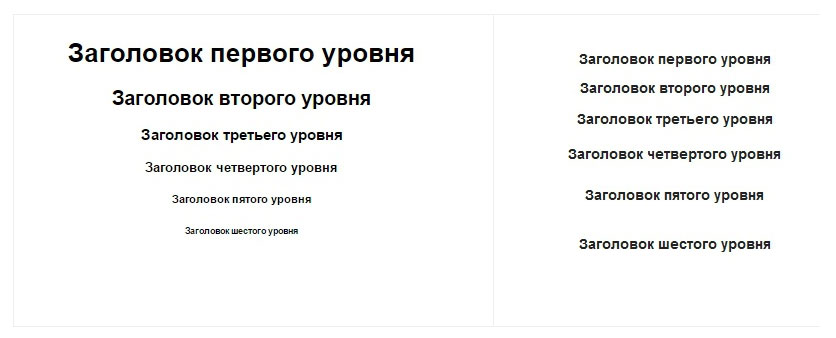
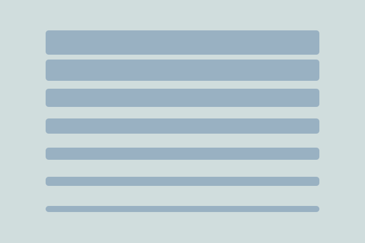
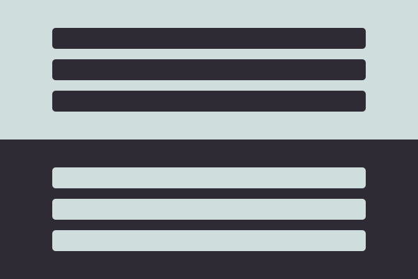
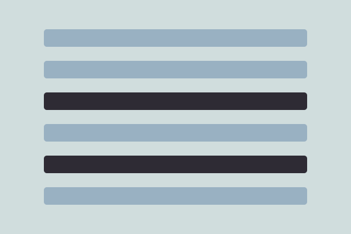
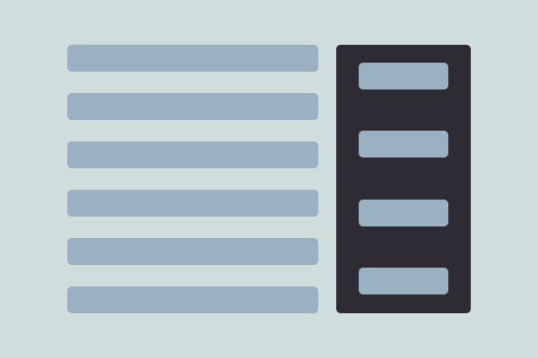
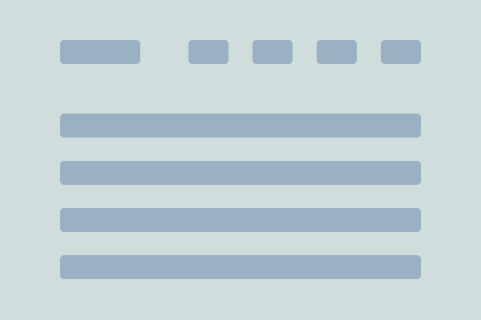
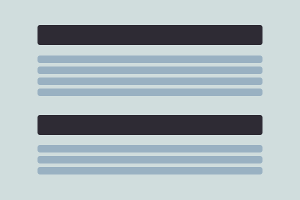

Любой интерфейс должен быть удобен и понятен пользователю. Визуальная иерархия позволяет организовать информацию и элементы таким образом, чтобы пользователь смог без труда разобраться с новым интерфейсом и отличить главное от второстепенного.
В процессе создания визуальной иерархии нужно учитывать приоритетность тех или иных элементов в интерфейсе с точки зрения их важности – от самого важно до менее важных. Визуальная иерархия, например, веб странички, подсказывает пользователю, какую структуру имеет страница и создает связь между элементами.
Визуальная иерархия позволяет пользователю легче изучать и переваривать новый материал. Хорошо построенная иерархия элементов на странице позволяет быстрее найти интересующую информацию за счет того, что элементы смысловых блоков более сплоченные и имеют заметный заголовок.
Пример визуальной иерархии
Достаточно простой пример, но очень наглядный – это иерархия заголовков HTML кода. От H1 до H6. Заголовок H1 является самым большим, потому, что это самый главный заголовок страницы, а подзаголовок H6 является самым маленьким, так как иерархически менее важен, нежели заголовок первого уровня.
Как вы думаете, какой из двух примеров является наиболее удобным для восприятия – тот, в котором размер определяется значением или тот, где все элементы одинаковы? Очевидно, что первый вариант наиболее удобен для понимания структуры страниц.
Как правильно создавать визуальную иерархию
Размер, контраст, цвет, расположение, выравнивание, вертикальный ритм – это те самые свойства блоков и элементов, которые строят иерархию. Если взглянуть на пример выше, мы увидим, что размер был ключевым свойством в определении визуальной иерархии заголовков, который отличал, например, заголовок первого уровня от заголовка второго уровня.
Размер
Большие элементы на страницах привлекают внимание пользователя в первую очередь. Чем больше элемент, тем большее значение, больший вес он имеет. И наоборот – более мелкие элементы имеют меньшее значение в визуальной иерархии. Это позволяет вам различать структуру, выделять блоки и лучше ориентироваться на странице, если мы говорим о веб-интерфейсе.
Контраст
Иерархический приоритет элементов также может определяться степенью контрастности. Если один элемент имеет темный фон, а соседний – более светлый, то очевидно, что первый будет более заметен. Контраст – это очень удобный инструмент выделения важных элементов на странице. Например, заголовок может быть более контрастным, чем сам текст. Или, например, дата в ленте новостей может быть менее контрастна, чем заголовок новости, так как несет меньшую смысловую нагрузку.
Цвет
Цвет – это не менее важный инструмент в определении визуальной иерархии. Он позволяет привлекать внимание к более важным блокам в дизайне страницы. Для того, чтобы создать правильную цветовую иерархию, нужно экспериментировать, пробовать, подбирать цвета от менее насыщенных к более ярким.
Расположение элементов
Расположение элементов может разделять блоки, или наоборот интуитивно сближать, говоря о том, что элементы имеют какое-то отношение друг к другу. Расположение элементов может группировать отдельные части интерфейса в блоки, тем самым указывая их принадлежность друг к другу.
Выравнивание
Выравнивание элементов друг относительно друга может также определять их значение на странице. Например, очевидно, что блок, отбитый от других блоков слева на картинке – является главным. Обычно на этом месте располагается логотип компании.
Вертикальный ритм
Вертикальный ритм – это одна из главнейших составляющих грамотного интерфейса. Пункты в списках, отношение заголовка к контенту, высота строк контента – это то, что позволяет пользователю легко сориентироваться в информации, понять, что и к чему относится. Рекомендую у строк контента указывать расстояние друг относительно друга не менее 1.6 em. Но расстояние между строк должно быть не больше, чем расстояние между заголовком и текстом. А расстояние между блоками заголовок + текст должно быть больше, чем расстояние между заголовком и текстом.
Кроме этих простых правил есть еще и другие, которые не вошли в данную статью, но умея правильно строить визуальную иерархию даже по этим базовым принципам, можно сделать качественный и понятный интерфейс, который будет легко читаться и восприниматься пользователями.